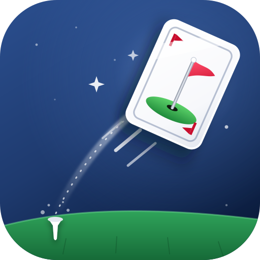
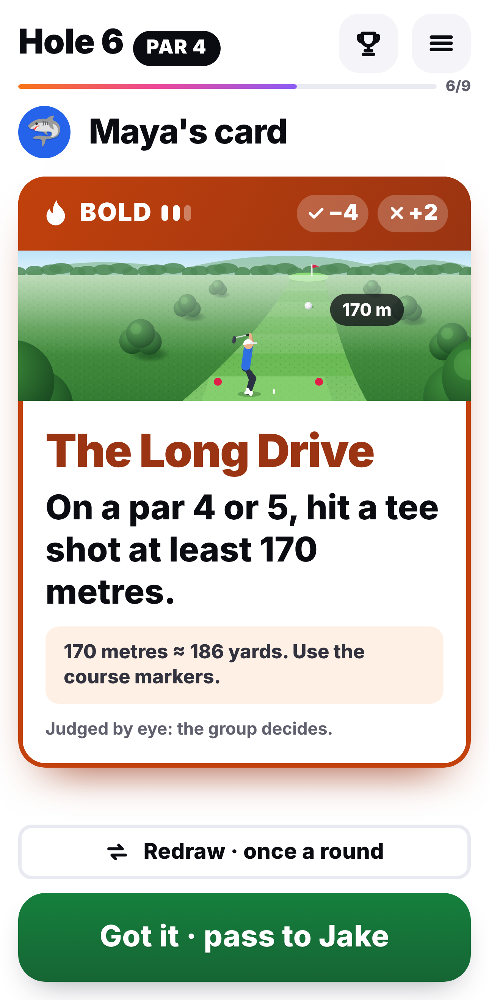
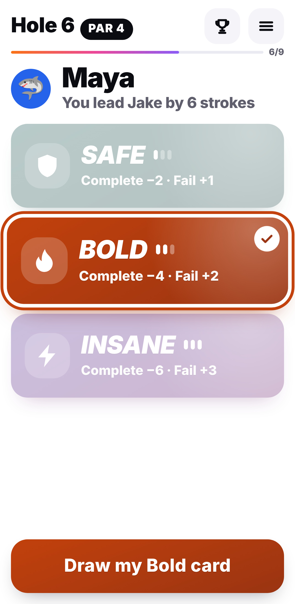
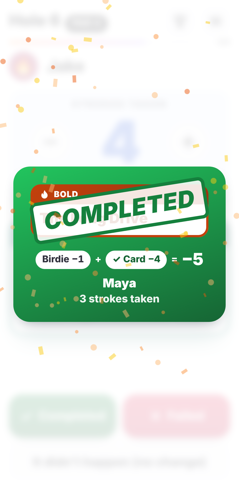
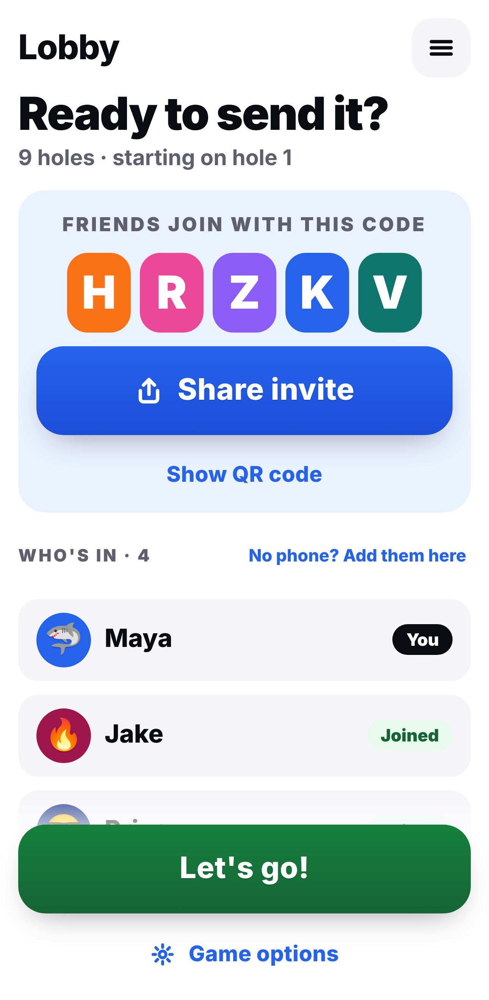
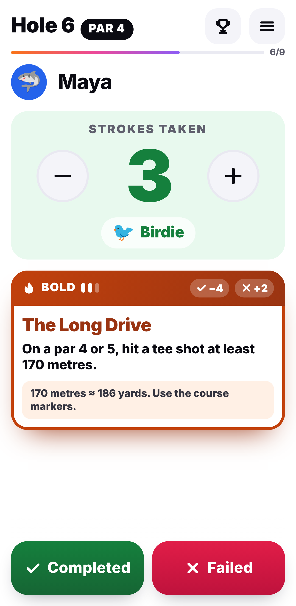
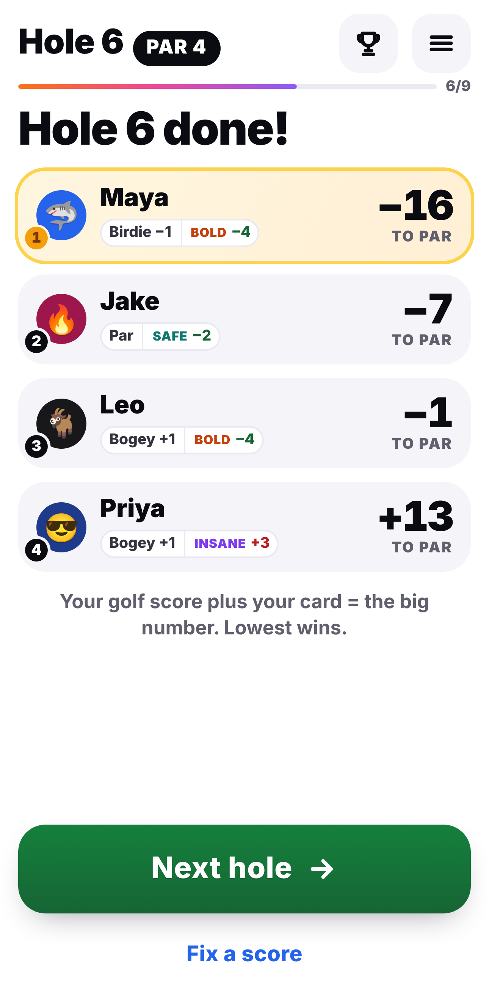
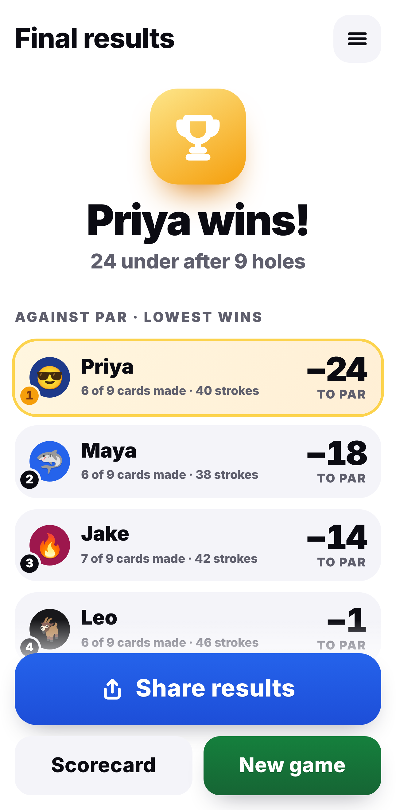
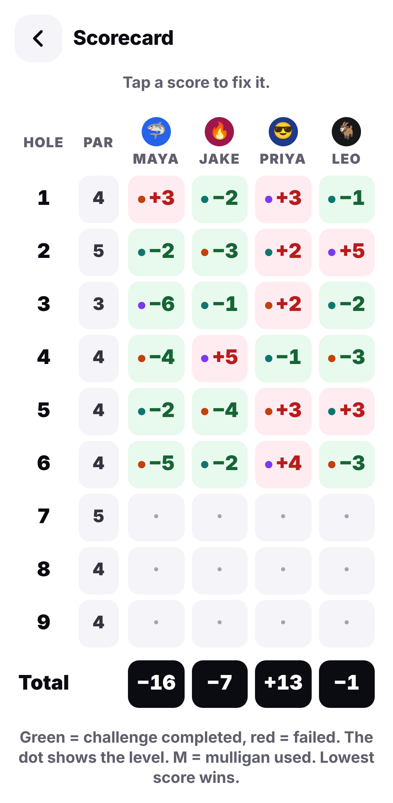

CARDSHOTPick a risk, draw a challenge card, then play the hole for real.

Safe, Bold or Insane. The bigger the risk, the bigger the swing.

A Bold card takes 4 off your score. An Insane one takes 6.

Share a 5-letter code and you're in. No accounts.

Tap in your strokes, then say if you made the card.

The table moves after every hole, so nobody's ever out of it.

Plus awards for the comeback and the daredevil.

Real strokes stay real. Your cards are kept beside them, hole by hole.
